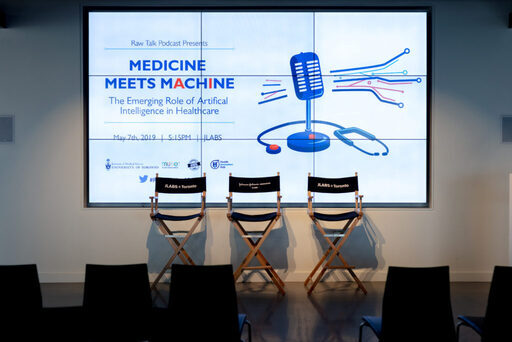

Raw Talk
HOME
TEAM
EPISODES
CONTACT
EPISODES
#62:
Artificial Intelligence in Medicine: where are we now?

#61:
Alternative Facts, Pseudoscience, Real Debate
#60:
Mental Health Meets the Law
#59:
Let's Get Personal
#58:
Our Aging Population: The Silver Tsunami or Red Herring?
#57:
Autism: Unraveling the Spectrum
#56:
Mirror, Mirror - The Science Behind Skin & Cosmetics
#55:
Food for Thought: Unpacking Nutritional Science
#54:
Sex, Society and Science
#53:
Indigenous Perspectives on Health
#52:
Respect Your Rhythm
#51:
From "Miracle Drug" to Epidemic
#50:
From Surgical Mesh to DBS - Medical Devices in the 21st Century
#49:
Canada Legalizes Cannabis
#48:
Unpacking Autoimmunity: Myths, Microbes & Misdiagnoses
#47:
Graduate Student Mental Health
#46:
Season 3 is here!
#45:
New Methods of Science Communication
#44:
Public Engagement in Science
#43:
Advancing Kidney Transplants & Medical Culture
#42:
Mindfulness - A Personal & Professional Project
#41:
Unpacking the Award-Winning Documentary - Unrest
#40:
What Does it Mean to Survive Cancer?
#39:
Economics & Childhood Cancer Treatment
#38:
Pollution & Our Lungs
#37:
Neurodegeneration, Concussions, & Misconceptions
#36:
The Future is Neuroscience!
#35:
Comics and Medicine
#34:
Simulation in Healthcare
#33:
Sleep & Anesthesia Explained
#32:
Delivering Quality End of Life Care
#31:
Sex, Gender, & the Brain
#30:
Hearing Loss, Language & Learning
#29:
Personalizing Cancer Medicine
#28:
History & Ethics of Stem Cells
#27:
Assessing Medical Learners
#26:
Suicide - Who is Susceptible?
#25:
Mathematical Magic and STIs
#24:
Combating Treatment Resistant Depression
#23:
Nature, Nurture & Mood Disorders
#22:
We're Back!
#21:
The Gender & Diversity Gap in STEMM
#20:
Advances in Epilepsy Care
#19:
Mapping Language with MEG
#18:
Motor Control & Movement Disorders
#17:
Neuroimaging Chronic Pain
#16:
Restoring Sight with Stem Cells
#15:
From Cells to Tissues
#14:
Living with Cystic Fibrosis
#13:
Engineering Better Lungs
#12:
Graduate Professional Development
#11:
Re-Imagining the PhD
#10:
Undergrads Ask
#9:
Grad Students Answer
#8:
Marrying Art, Science & Design
#7:
Becoming a Health Research Translator
#6:
Concussion in Sports
#5:
Essentials of Spinal Cord Injury
#4:
Demystifying Schizophrenia
#3:
Kids, Kidneys & Double Degrees
#2:
Polymers that Promote Healing
#1:
Introducing Raw Talk (formerly known as Raw Data)